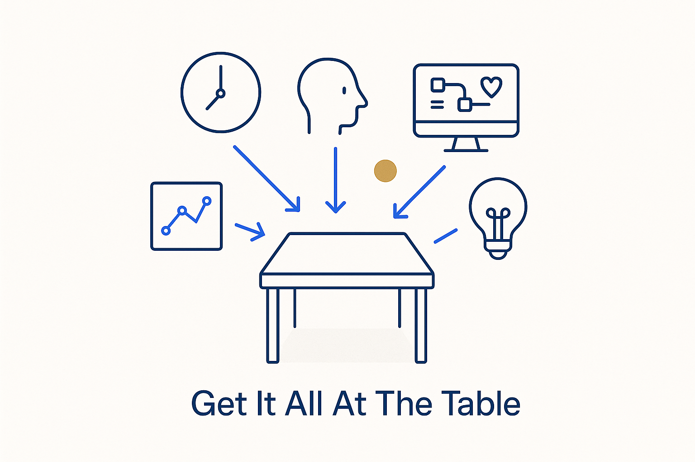

Bring every source, stakeholder, system and insight together at one table — now, all visible and connected — instead of scattered across time, teams and tools.

> Bring every source, stakeholder, system and insight together at one table — now, all visible and connected — instead of scattered across time, teams and tools.
Most modeling failures are not failures of thinking; they are failures of *assembly.* The source expert is in one meeting, the consumer in another, the rules in a document, the data behind a login, the decision in someone’s inbox — and because nothing is at the table at the same time, the model is stitched together from partial views that never quite line up. Get it all at the table means the opposite: bring every source, stakeholder, system and insight into one shared view, now, all visible and connected, so the whole picture is in front of everyone at once.
The two words that carry it are *all* and *now.* All — not the convenient subset, but the sources, the consumers, the rules, the real data, the people who own each piece. Now — not spread across a sequence of handovers where context leaks at every step, but present together while the modeling actually happens. When the whole is on the table, the contradictions surface immediately, the assumptions get challenged by the people who know, and the model is built from a complete picture instead of a guess.
This is what the collaborative layer and shift-left are *for*: they exist to get everything and everyone to the table early. Structure and AI make it finally possible — one connected, queryable source everyone can see — but it still takes the deliberate move of pulling it all together. Get it all at the table, and the model reflects reality because reality was in the room.
Where it lives: the signature principle of Breakthrough Modeling — the whole picture, in front of everyone, now.